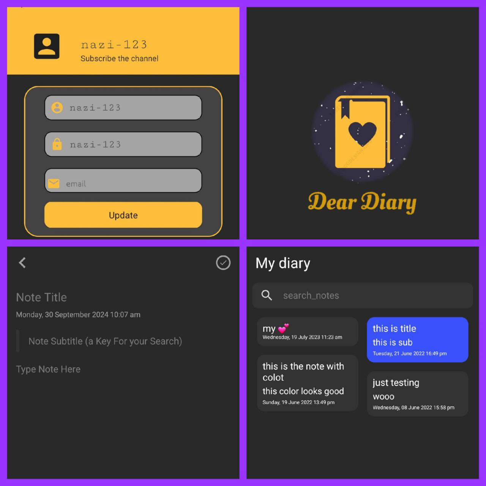

- Data Preprocessing: In this section, besides getting more familiar with the project data, you will perform a series of preparation and preprocessing steps on the entire dataset.
- Exploration: In this step, we will answer a series of high-level questions and gain an intuitive understanding of the company's financial data.
- Target Market Study: In the third step, we will analyze the sales locations and examine in which countries, despite having many customers, the company experiences low sales.
- Customer Valuation: In this step, we introduce a practical metric called RFM, and based on this metric, we will divide the company's customers into 7 categories, each of which has its own specific meaning and behavior from a marketing perspective.
- Customer Retention Analysis: In the final step, we aim to understand what percentage of customers, after their first purchase, continue to buy from the company in the following months.
- Analyzed real estate data of houses in Beijing, conducting comprehensive analysis and visualizing the results using charts.
- The project consists of five main sections:
- Data Reading: Loaded the dataset, removed unnecessary columns, and handled missing values.
- Data Cleaning: Converted columns to appropriate formats and removed outliers.
- Feature Engineering: Created new features from the existing ones to aid further analysis.
- Geographic Visualization: Used the latitude and longitude of houses to plot their locations on a map for spatial insights.
- Temporal Transaction Analysis: Conducted a time-based analysis of completed transactions using the transaction dates.

- Designed and implemented a diary application in Java for Android.
- Integrated various activities, including CreateNoteActivity,LoginActivity,MainActivity, ProfileActivity, and SplashActivity.
- Developed the app's backend using NotesDatabase.java and entity for data handling and storage.
- Managed user authentication, profile creation, and note-taking features.
- Cifar10 datasset
- Split data into training, validation, and testing sets.
- Designed and implemented neural networks with up to five hidden layers using Keras.
- Applied CategoricalCrossEntropy as the loss function and optimized hyperparameters using KerasTuner.
- Evaluated model performance using accuracy, F1-score, and ROC-AUC.
- Designed a wide and deep network, comparing its performance to a deep network.
dataset(fashion_mnist & california-housing)/ usingSequentialModel and Wide and deep
corellation-attribute combination
SimpleImputer OrdinalEncoder OneHotEncoder MinMaxScaler StandardScaler rbf-kernel
LinearRegression FunctionTransformer Pipeline ColumnTransformer mean-absolute-error
mean-squared error-root mean-squared-error r2score GridSearchCV